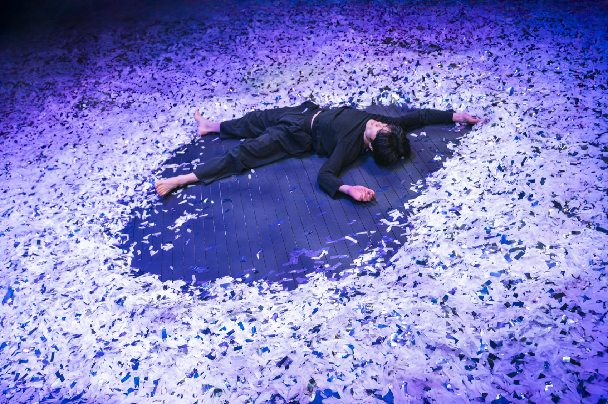
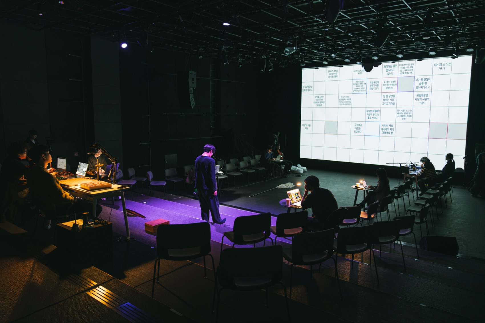
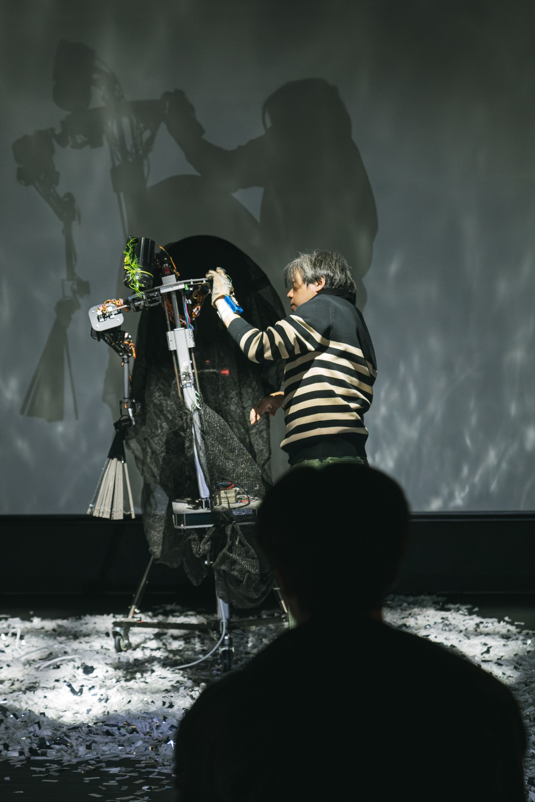
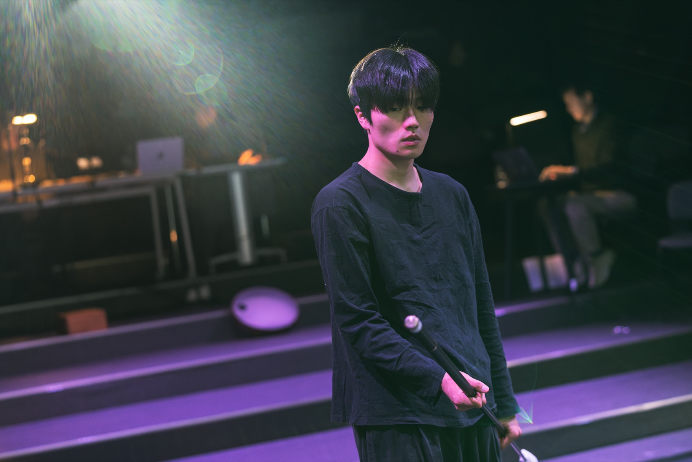

Performance — 2024
Gongjungmae
— Rising공중매(空中媒) — 떠오르는 · 고등과학원
과학자와 예술가가 한 무대에 오른다 — 실재를 호명하는 글쓰기와, 그 부름으로 떠오르는 퍼포먼스.
Scientists and artists share one stage — a writing that calls the real by name, and a performance that rises at the call.
‘공중매(空中媒) — 떠오르는’은 고등과학원 초학제 독립연구단 ‘느린 과학, 낮은 기술, 거꾸로 선 예술’의 첫 번째 퍼포먼스입니다. 연구단은 과학과 기술, 예술을 연결하는 고리를 가정하고, 예술과 과학이 애매와 모호의 실재에서 같은 현기증을 앓고 있다고 진단합니다. 실재는 텅 비어(空) 있으므로 가능성으로 가득 차 있고, 이것도 저것도 아니며(中), 끊임없이 드러나며(媒) 떠오릅니다 — 841자로 한 편이지만 거꾸로, 건너뛰어 읽으면 7,958수의 시가 되는 《직금회문(織錦回文)》처럼. 연구단은 이 다양한 얼굴을 ‘잠재태적 실재’라 부릅니다.
공연은 글쓰기 퍼포먼스와 배우 퍼포먼스의 이중 구조입니다. 무대 위에서 벌어지는 장면을 보며 연구원들이 즉흥으로 써 내려가는 글이 구글 스프레드시트를 통해 실시간으로 스크린에 투사되고, 배우들은 연구원들이 제공한 텍스트 — 푸앵카레의 《과학의 가치》, ‘동물도 과학을 할 수 있을까?’, 화성탐사선 스피릿과 오퍼튜니티를 데려오는 ‘MER 보고서’ 낭독까지 — 를 몸과 발화로 옮깁니다. 무엇이 떠오르는지 지켜보는 사람들은 모두, 신과 악마가 되어 우유의 바다를 휘젓는 사람들입니다.
The first performance of the KIAS transdisciplinary research unit ‘Slow Science, Low Technology, Art Standing on Its Head.’ The unit diagnoses art and science as suffering the same vertigo before an ambiguous real: empty (空), therefore full of possibility; neither this nor that (中); endlessly surfacing (媒) — like the palindrome-poem Jikgeum Hoemun, one poem of 841 characters that yields 7,958 poems when read backwards or in skips. They call these many faces the ‘potential real.’ The evening runs on a double structure: researchers write in real time as they watch the stage, their sentences projected via a live spreadsheet, while actors embody texts the researchers provided — Poincaré, ‘Can animals do science?’, and the reading of an ‘MER report’ on bringing the Mars rovers Spirit and Opportunity home. Those watching what rises are all of them gods and demons, churning the ocean of milk.
- 연구단
- Research unit
- 느린 과학, 낮은 기술, 거꾸로 선 예술 (단장 함성호)
- Slow Science, Low Technology, Art Standing on Its Head (dir. Ham Seong-ho)
- 연출
- Directed by
- 김제민 Kim Jae Min
- 출연
- Performers
- 권병준 · 김제민 · 박권수 · 오준호 · 이지선 · 전준 · 함성호 (연구원) / 김대희 · 송은수 · 이창재 (배우)
- Researchers Kwon Byung-jun, Kim Jae Min, Park Kwon-soo, Oh Jun-ho, Lee Ji-sun, Jun Jun, Ham Seong-ho · actors Kim Dae-hee, Song Eun-su, Lee Chang-jae
- 음악
- Music
- 권병준
- 스태프
- Staff
- 디자인 임지언 · 조연출 손희범, 장은준 · 조명 이훈교 · 음향 원형빈 · PD 권오범
- Design Lim Ji-eon · assistant directors Son Hee-beom, Jang Eun-jun · lighting Lee Hun-gyo · sound Won Hyung-bin · PD Kwon O-beom
- 키워드
- Keywords
- slow science · potential real · live writing · transdisciplinary
연구단 — 느린 과학, 낮은 기술, 거꾸로 선 예술
The unit — slow science, low technology, inverted art
진정한 하이테크는 언제나 로테크를 지향한다
True high-tech always aims at low-tech
연구단의 기획안은 과학이 ‘현대의 유일한 종교’가 되어 가는 시대에, 반증을 통해서만 계속되는 한없이 느린 과학의 속성을 되돌아봅니다. 헤르츠는 전자기파의 쓸모를 묻는 학생에게 “아무짝에도 쓸모가 없지”라 답했지만, 그 무용한 실험이 라디오가 되었습니다 — 틀린 이론은 있어도 영원히 쓸모없는 이론은 없습니다. 모로코 시장의 ‘맨땅의자’는 네 다리 길이가 제각각이라 고른 바닥에서는 기우뚱대지만, 울퉁불퉁한 땅에서는 어디서든 꼭 들어맞습니다. 바닥을 고르는 대신 다리를 제각각으로 만든 이 의자처럼 — 예술은 기술과 과학의 방향을 천천히, 거꾸로 움직이게 할 수 있을까요.
In an age when science becomes ‘the only modern religion,’ the unit’s prospectus returns to the endlessly slow science that proceeds only by refutation. Asked what use his electromagnetic waves were, Hertz replied ‘none whatsoever’ — and that useless experiment became radio: there are wrong theories, but no forever-useless ones. The Moroccan souk stool wobbles on level floors because its four legs are all different lengths — yet on rough ground it fits anywhere. Like that stool, which adjusted its legs instead of levelling the earth: can art turn the direction of science and technology, slowly, upside down?
- 참여 연구진
- Researchers
- 함성호(건축·시) · 권병준(미디어아트) · 김제민(미디어아트) · 박영선(사진) · 김홍중(문화사회학) · 오준호(매체미학) · 전용훈(과학기술학) · 전준(과학기술사회학)
- Ham Seong-ho (architecture, poetry) · Kwon Byung-jun (media art) · Kim Jae Min (media art) · Park Young-sun (photography) · Kim Hong-jung (sociology) · Oh Jun-ho (media aesthetics) · Jeon Yong-hoon (STS) · Jun Jun (STS)
- 이어지는 작업
- What followed
- 이 퍼포먼스의 ‘공남(空男)’은 이듬해 체셔 고양이는 무슨 꽃을 물었을까?(2025)에 다시 등장하고, 연구단의 여정은 연극 113(2026)으로 이어진다.
- The ‘man of 空’ returns in the Cheshire Cat performance (2025); the unit’s journey continues into 113 (2026).
공연 기록 — 수림문화재단 SPACE1, 2024. 12. 27.
Performance record — SPACE1, 27 Dec 2024


